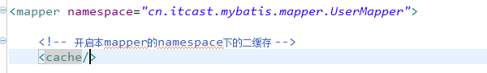
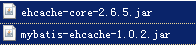

本文主要介绍了mybatis的查询缓存以及与ehcache、spring等框架的整合。
7 查询缓存
7.1 什么是查询缓存
mybatis提供查询缓存，用于减轻数据压力，提高数据库性能。
mybaits提供一级缓存，和二级缓存。
一级缓存是SqlSession级别的缓存。在操作数据库时需要构造 sqlSession对象，在对象中有一个数据结构（HashMap）用于存储缓存数据。不同的sqlSession之间的缓存数据区域（HashMap）是互相不影响的。
二级缓存是mapper级别的缓存，多个SqlSession去操作同一个Mapper的sql语句，多个SqlSession可以共用二级缓存，二级缓存是跨SqlSession的。
为什么要用缓存？
如果缓存中有数据就不用从数据库中获取，大大提高系统性能。
7.2 一级缓存
7.2.1 一级缓存工作原理
第一次发起查询用户id为1的用户信息，先去找缓存中是否有id为1的用户信息，如果没有，从数据库查询用户信息。
得到用户信息，将用户信息存储到一级缓存中。
如果sqlSession去执行commit操作（执行插入、更新、删除），清空SqlSession中的一级缓存，这样做的目的为了让缓存中存储的是最新的信息，避免脏读。
第二次发起查询用户id为1的用户信息，先去找缓存中是否有id为1的用户信息，缓存中有，直接从缓存中获取用户信息。
7.2.2 一级缓存测试
mybatis默认支持一级缓存，不需要在配置文件去配置。
按照上边一级缓存原理步骤去测试。
|
|
7.2.3 一级缓存应用
正式开发，是将mybatis和spring进行整合开发，事务控制在service中。
一个service方法中包括 很多mapper方法调用。
|
|
如果是执行两次service调用查询相同 的用户信息，不走一级缓存，因为session方法结束，sqlSession就关闭，一级缓存就清空。
7.3 二级缓存
7.3.1 原理
首先开启mybatis的二级缓存。
sqlSession1去查询用户id为1的用户信息，查询到用户信息会将查询数据存储到二级缓存中。
如果SqlSession3去执行相同 mapper下sql，执行commit提交，清空该 mapper下的二级缓存区域的数据。
sqlSession2去查询用户id为1的用户信息，去缓存中找是否存在数据，如果存在直接从缓存中取出数据。
二级缓存与一级缓存区别，二级缓存的范围更大，多个sqlSession可以共享一个UserMapper的二级缓存区域。
UserMapper有一个二级缓存区域（按namespace分） ，其它mapper也有自己的二级缓存区域（按namespace分）。
每一个namespace的mapper都有一个二缓存区域，两个mapper的namespace如果相同，这两个mapper执行sql查询到数据将存在相同 的二级缓存区域中。
7.3.2 开启二级缓存
mybaits的二级缓存是mapper范围级别，除了在SqlMapConfig.xml设置二级缓存的总开关，还要在具体的mapper.xml中开启二级缓存。
在核心配置文件SqlMapConfig.xml中加入<setting name="cacheEnabled" value="true"/>
| 描述 | 允许值 | 默认值 | |
|---|---|---|---|
| cacheEnabled | 对在此配置文件下的所有cache 进行全局性开/关设置。 | true false | true |
在UserMapper.xml中开启二缓存，UserMapper.xml下的sql执行完成会存储到它的缓存区域（HashMap）。

7.3.3 调用pojo类实现序列化接口
为了将缓存数据取出执行反序列化操作，因为二级缓存数据存储介质多种多样，不一定在内存。
7.3.4 测试方法
|
|
7.3.5 useCache配置
在statement中设置useCache=false可以禁用当前select语句的二级缓存，即每次查询都会发出sql去查询，默认情况是true，即该sql使用二级缓存。<select id="findOrderListResultMap" resultMap="ordersUserMap" useCache="false">
总结：针对每次查询都需要最新的数据sql，要设置成useCache=false，禁用二级缓存。
7.3.6 刷新缓存（就是清空缓存）
在mapper的同一个namespace中，如果有其它insert、update、delete操作数据后需要刷新缓存，如果不执行刷新缓存会出现脏读。
设置statement配置中的flushCache=”true” 属性，默认情况下为true即刷新缓存，如果改成false则不会刷新。使用缓存时如果手动修改数据库表中的查询数据会出现脏读。
如下：<insert id="insertUser" parameterType="cn.itcast.mybatis.po.User" flushCache="true">
总结：一般情况下执行完commit操作都需要刷新缓存，flushCache=true表示刷新缓存，这样可以避免数据库脏读。
7.4 mybatis整合ehcache
ehcache是一个分布式缓存框架。
7.4.1 分布缓存
我们系统为了提高系统并发，性能、一般对系统进行分布式部署（集群部署方式）
不使用分布缓存，缓存的数据在各个服务单独存储，不方便系统 开发。所以要使用分布式缓存对缓存数据进行集中管理。
mybatis无法实现分布式缓存，需要和其它分布式缓存框架进行整合。
7.4.2 整合方法(掌握)
mybatis提供了一个cache接口，如果要实现自己的缓存逻辑，实现cache接口开发即可。
mybatis和ehcache整合，mybatis和ehcache整合包中提供了一个cache接口的实现类。
mybatis默认实现cache类是：
7.4.3 加入ehcache包

7.4.4 整合ehcache
配置mapper中cache中的type为ehcache对cache接口的实现类型。
7.4.5 加入ehcache的配置文件
在classpath下配置ehcache.xml
7.5 二级应用场景
对于访问多的查询请求且用户对查询结果实时性要求不高，此时可采用mybatis二级缓存技术降低数据库访问量，提高访问速度，业务场景比如：耗时较高的统计分析sql、电话账单查询sql等。
实现方法如下：通过设置刷新间隔时间，由mybatis每隔一段时间自动清空缓存，根据数据变化频率设置缓存刷新间隔flushInterval，比如设置为30分钟、60分钟、24小时等，根据需求而定。
7.6 二级缓存局限性
mybatis二级缓存对细粒度的数据级别的缓存实现不好，比如如下需求：对商品信息进行缓存，由于商品信息查询访问量大，但是要求用户每次都能查询最新的商品信息，此时如果使用mybatis的二级缓存就无法实现当一个商品变化时只刷新该商品的缓存信息而不刷新其它商品的信息，因为mybaits的二级缓存区域以mapper为单位划分，当一个商品信息变化会将所有商品信息的缓存数据全部清空。解决此类问题需要在业务层根据需求对数据有针对性缓存。
8 spring和mybatis整合
8.1 整合思路
需要spring通过单例方式管理SqlSessionFactory。
spring和mybatis整合生成代理对象，使用SqlSessionFactory创建SqlSession。（spring和mybatis整合自动完成）
持久层的mapper都需要由spring进行管理。
8.2 整合环境
创建一个新的java工程（接近实际开发的工程结构）
jar包：
mybatis3.2.7的jar包
spring3.2.0的jar包
mybatis和spring的整合包：早期ibatis和spring整合是由spring官方提供，mybatis和spring整合由mybatis提供。
全部jar包
（注意在idea环境下要把config设置成generated source root目录才可以）
8.3 sqlSessionFactory
在applicationContext.xml配置sqlSessionFactory和数据源
sqlSessionFactory在mybatis和spring的整合包下。
|
|
8.4 原始dao开发（和spring整合后）
8.4.1 User.xml
在SqlMapconfig.xml中加载User.xml
8.4.2 dao(实现类继承SqlSessionDaoSupport)
dao接口实现类需要注入SqlSessoinFactory，通过spring进行注入。
这里spring声明配置方式，配置dao的bean：
让UserDaoImpl实现类继承SqlSessionDaoSupport
8.4.3 配置dao
在applicationContext.xml中配置dao。
8.4.4 测试程序
8.5 mapper代理开发
8.5.1 mapper.xml和mapper.java
8.5.2 通过MapperFactoryBean创建代理对象
此方法问题：
需要针对每个mapper进行配置，麻烦。
8.5.3 通过MapperScannerConfigurer进行mapper扫描（建议使用）
8.5.4 测试代码
9 逆向工程
9.1 什么是逆向工程
mybaits需要程序员自己编写sql语句，mybatis官方提供逆向工程 可以针对单表自动生成mybatis执行所需要的代码（mapper.java,mapper.xml、po..）
企业实际开发中，常用的逆向工程方式：
由于数据库的表生成java代码。
9.2 下载逆向工程
9.3 使用方法（会用）
9.3.1 运行逆向工程
建议使用java程序方式，不依赖开发工具。
9.3.2 生成代码配置文件
|
|
9.3.3 执行生成程序
生成后的代码：
9.3.4 使用生成的代码
需要将生成工程中所生成的代码拷贝到自己的工程中。
测试ItemsMapper中的方法